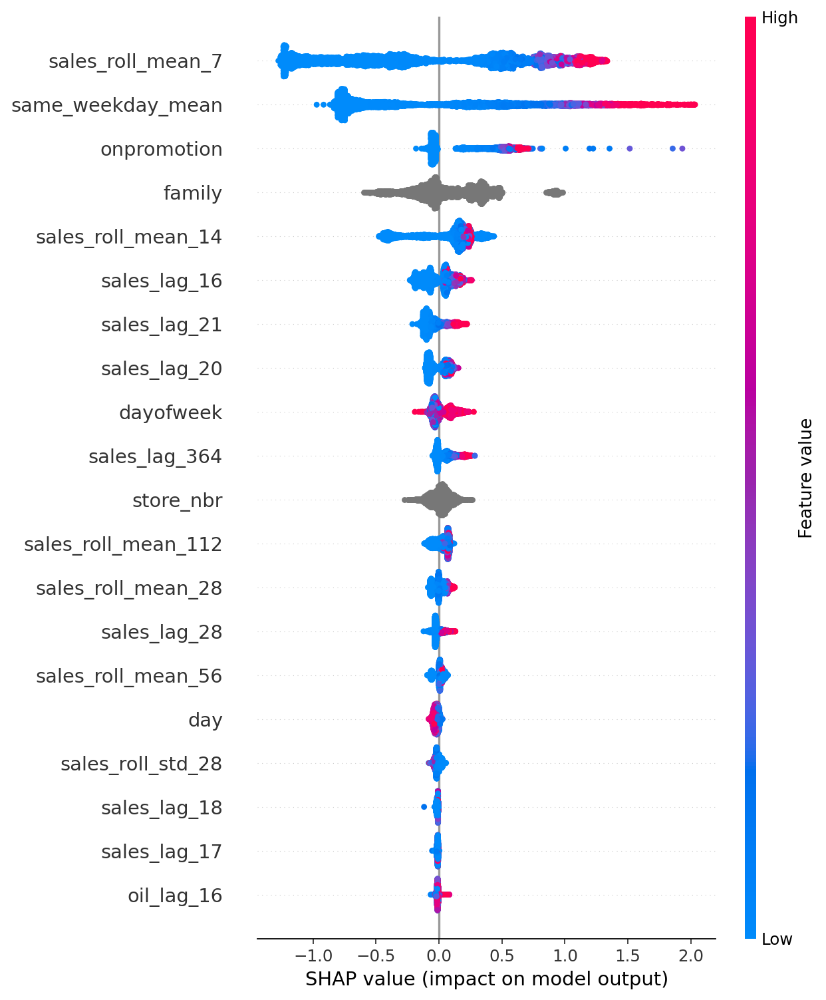

Inventario a la medida
Anticipa la demanda por tienda y familia para reponer lo justo y evitar quiebres de stock.
Inteligencia de demanda · Retail
Pronóstico diario de ventas para 54 tiendas y 33 familias de productos de Corporación Favorita, con 16 días de anticipación. Menos quiebres de inventario, menos mermas, mejores promociones.
Para el negocio
Anticipa la demanda por tienda y familia para reponer lo justo y evitar quiebres de stock.
Menos pérdidas por vencimiento en productos perecederos al ajustar pedidos a la demanda esperada.
Las promociones activas son la tercera señal más influyente del modelo: planifícalas con datos.
Validado en cuatro bloques consecutivos de 16 días con un error estable (WAPE 10,6% – 13,8%).
01 · Componente de actuación
Elige una tienda, una familia de productos y un rango de fechas dentro del horizonte de prueba (16–31 ago 2017). La línea punteada muestra cómo se comportó el modelo contra las ventas reales en la ventana de validación.
| Fecha | Día | Pronóstico (unid.) | vs. promedio del rango |
|---|
submission.csv con la validación, algunas familias de baja rotación o perecederas
(p. ej. Carnes, Pollo, Comidas preparadas) aparecen con pronósticos cercanos a cero en las tiendas de mayor volumen,
mucho menores que su nivel histórico reciente. Es probable que se deba a la regla «pronóstico nulo a series sin actividad reciente» del notebook;
conviene revisarla antes de usar estos valores operativamente.
02 · Resultados
Seis alternativas evaluadas en la ventana del 15 al 30 de julio de 2017. LightGBM ajustado con Optuna obtiene el menor error en las tres métricas.
Menor es mejor. El modelo naïve semanal tiene un RMSLE de 3,34, por lo que se omite del gráfico de esa métrica para conservar la escala (consúltalo en la tabla).
| Modelo | RMSLE | MAE | WAPE |
|---|
RMSLE de cada ensayo y mejor valor acumulado.
03 · Estabilidad
LightGBM ajustado evaluado sobre cuatro bloques consecutivos de 16 días: el RMSLE se mantiene entre 0,376 y 0,401.
| Bloque | Periodo | RMSLE | MAE | WAPE |
|---|
04 · Interpretabilidad
Valores SHAP sobre 5.000 observaciones de validación. La dinámica reciente de ventas y la estacionalidad semanal concentran el mayor peso, seguidas por las promociones y la familia del producto.

05 · Cómo se construyó
3.000.888 registros diarios (1 ene 2013 – 15 ago 2017) de 54 tiendas y 33 familias, integrando tiendas, transacciones, feriados y precio del petróleo. Sin usar información futura.
37 características con desfase mínimo de 16 días: rezagos, medias y desviación móviles, calendario, feriados por alcance, promociones, petróleo, transacciones e identificadores estructurales.
LightGBM base, optimizado (Optuna), Tweedie (p = 1,3), N-BEATS compacto y dos líneas base. Objetivo log(1 + ventas).
Ventana 15–30 jul 2017 y origen móvil en cuatro bloques de 16 días. Métricas: RMSLE, MAE y WAPE.
Reentrenamiento con el histórico hasta el 15 ago 2017 y pronóstico de 28.512 observaciones (16–31 ago), consultables en esta página.
06 · Recursos